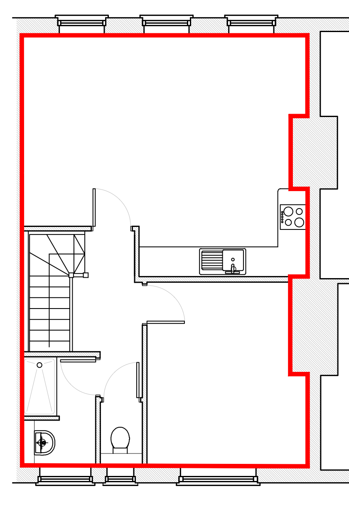

Measuring sheet: second floor
Lines and letters show what to measure. The numbers in the table are estimates scaled off this drawing, in mm.

Lengths, needed firstHeights, from the floorCan follow
* already sent to Claude: shown filled in, and left out of Copy unless you change it. ! still to measure, and important: only guessed, or likely to be well out.
Measure in mm, wall to wall at about waist height, to the nearest 5 or so. For doors and windows, measure to the opening (inside the frame or reveal). Leave any you can't get, and type a note after a number if you like ("2240 at floor, 2255 at ceiling").